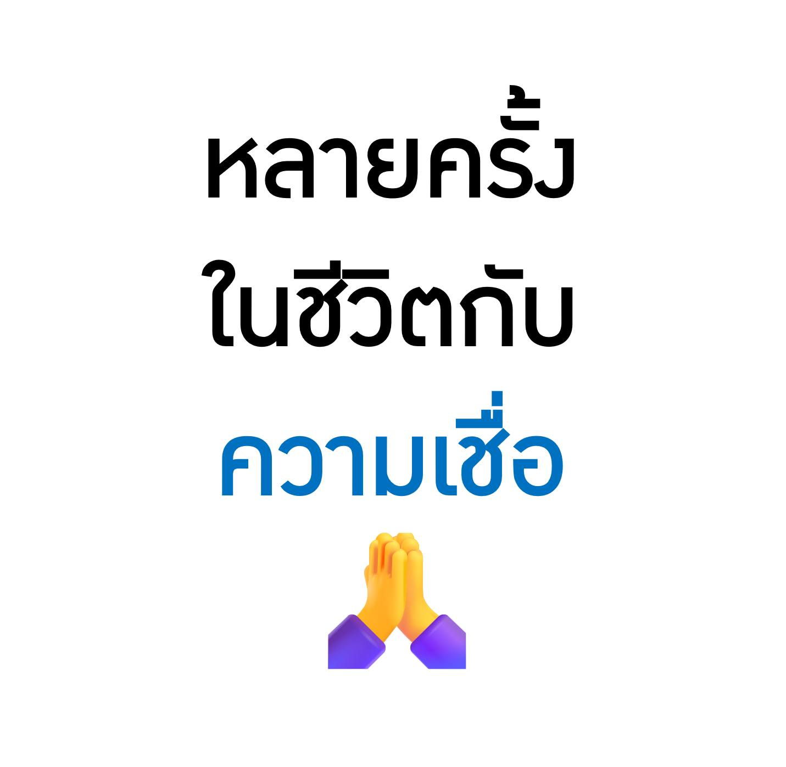

หลายครั้งในชีวิตกับความเชื่อ เมื่อมนุษย์ตัดสินใจอยู่ในโลกจริง แต่ก็ยังหนีไม่พ้นคำถามเรื่องโชคชะตา ความเชื่อ และสิ่งที่ควบคุมไม่ได้
{kind=link}

บทความนี้เป็นงานเขียนเชิงทบทวนชีวิตที่ผู้เขียนเปิดเผยอย่างตรงไปตรงมาว่า เขาเคยใช้การสวดมนต์เป็นเครื่องมือสร้างขวัญกำลังใจมาตั้งแต่วัยสอบเข้ามหาวิทยาลัย แต่ขณะเดียวกันก็ไม่เคยเชื่อเรื่องผีหรือดวงแบบง่าย ๆ นั่นทำให้ทั้งโพสต์เต็มไปด้วยความตึงเครียดระหว่าง เหตุผล, ประสบการณ์ และ สิ่งที่อธิบายไม่ได้
จุดน่าสนใจคือผู้เขียนไม่ได้พยายามสรุปโลกแบบฟันธง เขาเล่าเรื่องหมอดู ไพ่ทาโรต์ โรคประหลาด กัญชา ผีอำ และเหตุการณ์เฉียดตาย โดยวางทุกอย่างไว้ในกรอบเดียวกันว่า มนุษย์ตัดสินใจได้เฉพาะในปัจจุบัน แต่ผลลัพธ์ของชีวิตยังมีพื้นที่ของสิ่งที่เราคุมไม่ได้เสมอ
ส่วนแรกของบทความนี้เล่าถึงการสวดมนต์ในฐานะเครื่องมือสร้างพลังใจ ไม่ใช่พิธีกรรมศักดิ์สิทธิ์แบบที่ต้องเชื่ออย่างสมบูรณ์ ผู้เขียนใช้มันเพื่อประคองตัวเองในช่วงชีวิตที่ต้องการแรงยึดเหนี่ยว ซึ่งทำให้ความเชื่อในที่นี้มีลักษณะเป็น psychological discipline มากกว่าการมอบชีวิตทั้งหมดให้สิ่งเหนือธรรมชาติ
ความไม่เชื่อแบบสุดโต่งก็ไม่เพียงพอ เมื่อชีวิตพาเราไปเจอประสบการณ์ที่อธิบายไม่ง่าย
ผู้เขียนย้ำหลายครั้งว่าไม่เชื่อเรื่องผี ไม่เชื่อเรื่องดวง และมองหมอดูหรือทรงเจ้าในฐานะประสบการณ์ที่ไปดูเพื่อเรียนรู้มากกว่าจะศรัทธา แต่ในเวลาเดียวกัน เขาก็เล่าเรื่องผีอำและประสบการณ์ทางร่างกายบางอย่างที่อธิบายได้ไม่หมด นี่ทำให้บทความไม่ตกไปสู่การเย้ยหยันความเชื่อของคนอื่นแบบง่าย ๆ
ตรงกันข้าม มันชี้ให้เห็นว่ามนุษย์จำนวนมากไม่ได้อยู่ในฝั่ง “เชื่อ” หรือ “ไม่เชื่อ” แบบบริสุทธิ์ หากแต่อยู่ในพื้นที่สีเทาที่ต้องจัดการกับสิ่งที่ตัวเองยังไม่เข้าใจ
การพยายามอ่านอนาคตอาจให้ความบันเทิง แต่ก็ทำให้เหนื่อยกับชีวิตคนอื่นเกินไป
ตอนที่ผู้เขียนเล่าถึงการศึกษาไพ่ทาโรต์และการพยากรณ์ให้คนอื่น มีน้ำหนักมากกว่าความขำ เพราะเขาสรุปว่าการพยายามเข้าไปอ่านชีวิตหรือปัญหาของผู้อื่นทำให้ตัวเองเหนื่อยเกินไป มุมนี้สะท้อนการเติบโตทางความคิดว่า ความอยากรู้อยากเห็นไม่ได้มีคุณค่าเสมอไป โดยเฉพาะเมื่อมันกินพลังทางใจของเราเอง
ดังนั้น บทความจึงไม่ได้ชวนให้ไล่ตามอำนาจพิเศษ แต่ชวนให้เห็นขอบเขตของตัวเอง และรู้ว่าอะไรควรปล่อยผ่าน
ชีวิตเต็มไปด้วย “รู้งี้” แต่คำว่า รู้งี้ ไม่มีจริงในเวลาที่เราต้องตัดสินใจ
หนึ่งในแกนที่ลึกที่สุดของโพสต์คือการยอมรับว่า ชีวิตเต็มไปด้วยคำว่า “รู้งี้” ไม่ว่าจะเป็นเรื่องหุ้น เรื่องสุขภาพ หรือเรื่องการเข้าไปยุ่งกับเหตุการณ์บางอย่าง ผู้เขียนชี้ว่าคำนี้ทำให้มนุษย์รู้สึกผิดได้เสมอ แต่ในความเป็นจริง การตัดสินใจในวันนั้นมักเป็นการตัดสินใจที่ดีที่สุดเท่าที่เรารู้ได้ในเวลานั้น
มุมนี้สอดคล้องกับข้อเขียนเรื่องมโนธรรมของเขาอย่างชัดเจน คือมนุษย์อาจประเมิน คำนวณ และวางแผนได้มาก แต่สุดท้ายก็ยังมีพื้นที่ของ ฟ้าลิขิต หรืออย่างน้อยที่สุดคือพื้นที่ของสิ่งที่เราไม่สามารถเห็นล่วงหน้าได้ทั้งหมด
ข้อสรุปไม่ได้อยู่ที่ว่าควรเชื่ออะไร แต่คือการยอมรับข้อจำกัดของมนุษย์อย่างไม่หลอกตัวเอง
เมื่ออ่านจนจบจะเห็นว่าโพสต์นี้ไม่ได้พยายามสรุปว่าไสยศาสตร์จริงหรือวิทยาศาสตร์จริงกว่า แต่กำลังพาเรากลับมาที่คำถามพื้นฐานที่สุดว่า ในโลกที่เต็มไปด้วยสิ่งไม่แน่นอน มนุษย์ควรใช้ชีวิตอย่างไร ผู้เขียนตอบผ่านประสบการณ์ว่าเราทำได้เพียงตัดสินใจในปัจจุบัน ใช้สติให้ดีที่สุด และยอมรับว่าชีวิตยังมีสิ่งที่เกินกำลังคำนวณเสมอ
นั่นทำให้บทความนี้เป็นงานใคร่ครวญเรื่องความเชื่อที่ไม่ชวนงมงายและไม่เยาะเย้ยศรัทธา แต่เปิดพื้นที่ให้มนุษย์อยู่กับความไม่แน่นอนได้อย่างซื่อสัตย์มากขึ้น